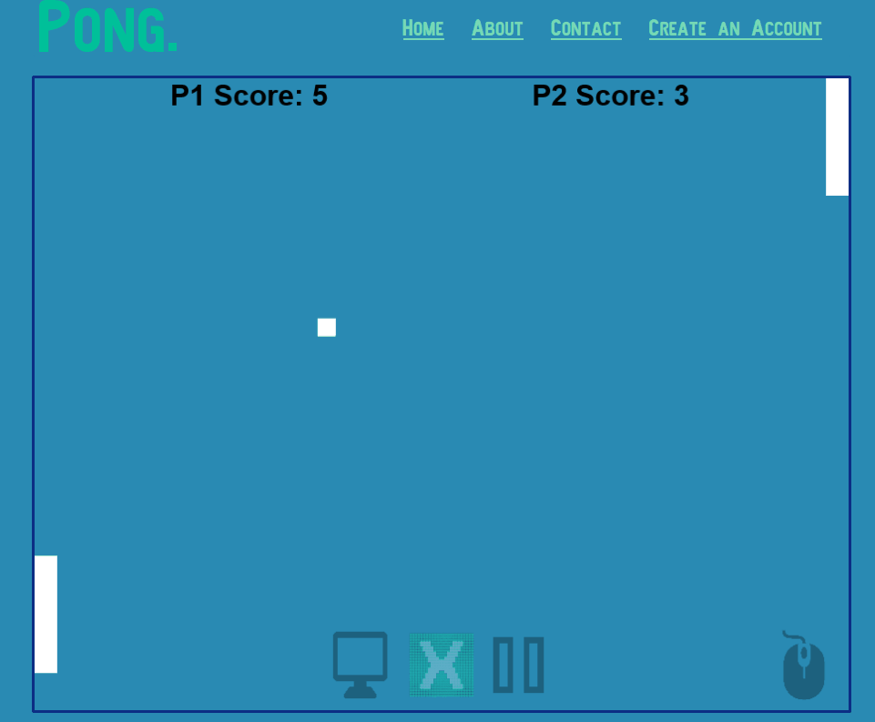
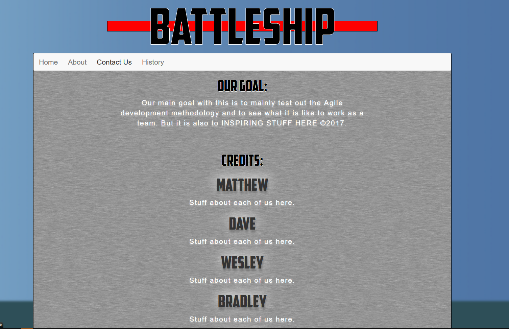
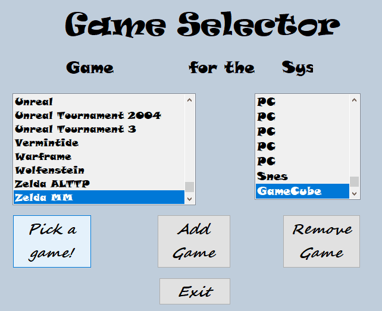
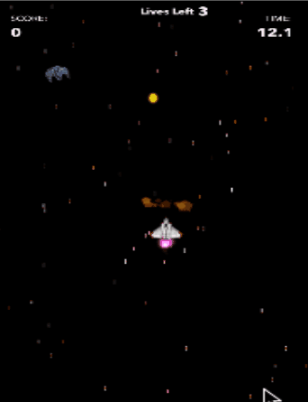
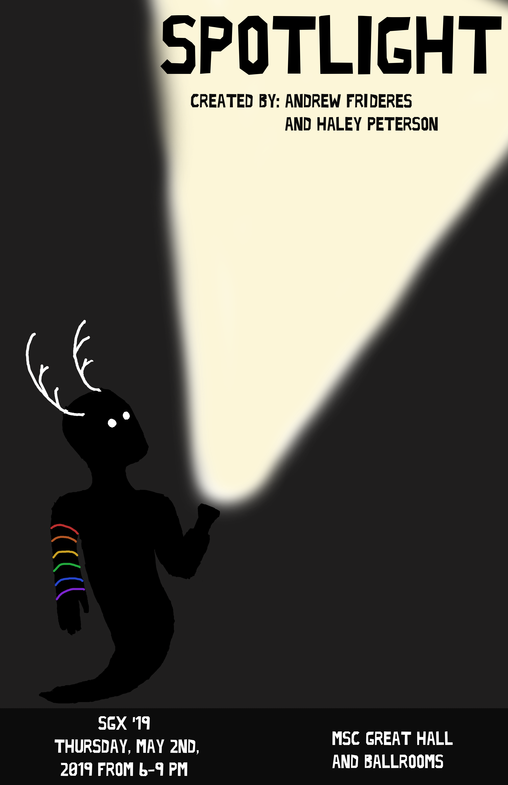
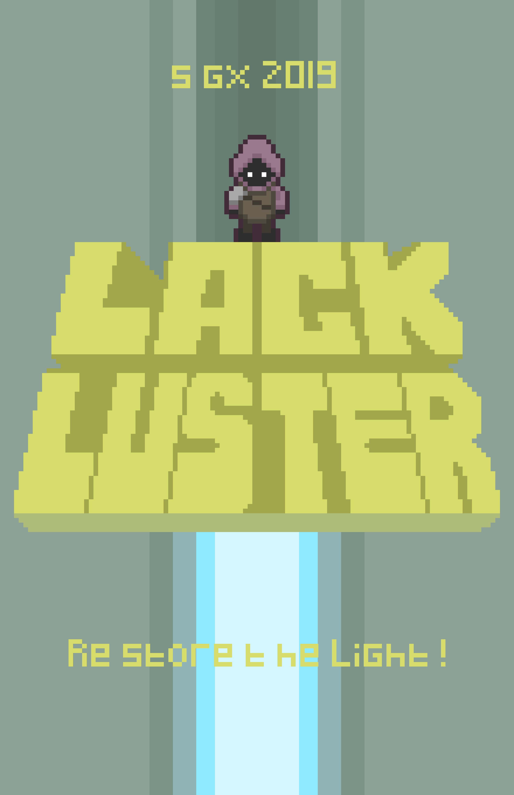
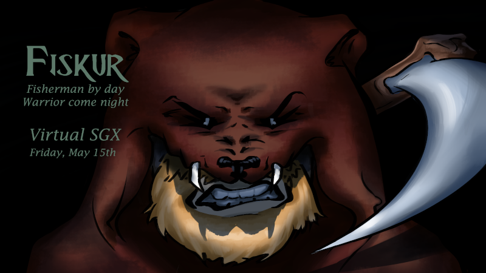

I love playing with all kinds of technology, from the new, to the old. I also have experience with Agile programming practicum, and tend to have an old school mindset on just about everything, from music, to values, to work ethic, and this translates into a lot of who I am. In my spare time I like to play a lot of old school games such as DOOM, pick up a new programming language, or start a new project and just plug away at that. Link to my resume here that includes the languages and projects I've worked on, otherwise I can also be contacted at my email address below.
My top programming languages: HTML & Javascript Java, PHP
Other languages: Ruby, Python Visual Basic C, C++, C#
Databasing skills: MySQL, SQLite PHP PDO
A game i started my first semester of college to show off my love of DOOM in a platformer format, and for me to learn a lot about JavaScript. I use the Phaser game engine prior to their version 3 patch, and while it isn't the prettiest, as time goes on and I learn new tricks of the trade, I've found myself revisiting it to try something new, update my game to see how it works with newer versions, or just trying weird Javascript gimmicks and getting them to work alongside it. Follow the associated link above to try it out!
My role in the group was to combine, test, and ensure we had a deliverable to show off every week. I also had to be able to sit town with team members and have them talk about their additions so that we could log it, and assist in any debugging and merging since that fell into my job role.This was my Capstone project at CVTC and my test for everything I had learned.
My role in this group was to assist with the front end GUI design and CSS styles using bootstrap. In addition I did a page on the history of battleships as a bit of context, and I ended up being a scribe for our group meetings every week. This assignment was a part of my course learning Agile, and so for the first time, I had to work together with a group in order to deliver a product.
A program i made using Visual Studio (2015 initially, updated to 2017), it uses a GUI to allow the user to add, remove, and edit games connected to a mySQL Database and then upon execution does a sort of "spin" to run through all the games and select one, complete with fun sound effects!
A game I did using Swift 2.0, it's more or less a clone of the classic Asteroids game from way back in the day. It is developed to scale gracefully depending on the size of the phone, and has states for playing, power ups, and game over conditions.
My first time using Unity, a game made with Haley Peterson at Stout for my GDD 200 class. In this game you play as a little ghost boy in their quest to restore color to the bleak world.
Made at Stout in my GDD 325 class, in Lackluster your goal is to activate all the orbs in order to restore the light to the world. The game was made using Phaser 3.0, and made use of an npm server on the back end
Part of my 450 GDD Capstone, a 3D action adventure game made in Unity, You play as a shipwrecked Viking who has crashed on an island within the arctic. Fitted with only your fishing rod, you set out to catch fish in order to survive the ordeal. After wandering the island for a time, you discover an altar deep within the island dedicated to Njord, God of the Sea. Offering some of your bounty to Njord, he aids you by turning your rod into a weapon capable of surviving the terrors of the night to come...
Link to Website & Download: https://castirongames2020.gitlab.io